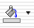

例えば、"A3"のセルの塗りつぶしの色は"青"。
"A2"のそれは"赤"といった具合です。
下に具体例をあげました。
例えば、"A3"のセルの塗りつぶしの色は"青"。
"A2"のそれは"赤"といった具合です。
詳しくは、Excelのヘルプ
『均一な色を使ってセルを塗りつぶす』
と
『塗りつぶしを削除する』
を参照してください。
- ある特定の色で塗りつぶしたいセルを選択する。
- （塗りつぶしの色）の右端にある下向きの三角形をクリックして色を選択します。
または[書式]メニューの[セル...]をクリックし、[パターン]タブを選択、そして、[セルの網かけ]フレームがあるので、そこから好きな色を選びます。（※下の方に[パターン：]とありますが、このマクロはそれには対応していません。下の図を参照してください。）
これを実行するには複数のセルを選択する方法について理解している必要があります。
- コピーしたいセル範囲を選択し、[編集]メニューの[コピー]をします。
- ペーストしたいセル範囲を選択します。
- [編集]メニューの[形式を選択してペースト...]を選び、[書式]オプションボタンを選択して、[OK]ボタンを押します。（下の図を参照してください）
この方法は、Excelの関数についてかなり詳しく知っている必要がありますが、使いこなすとかなり凝ったことをすることが出来るようになります。
たとえば、あるセルの数値が４で割り切れるときだけ色を付ける、といったことができます。
（※条件付き書式はExcel 97以降の機能です。）
条件付き書式についてはExcelのヘルプの
『セルに条件付き書式を設定する』、
『条件付き書式を変更、追加、または削除する』、
と
『書式設定した条件を指定する数式』
を参照してください。
条件付き書式は[書式]メニューにあります。
条件付き書式とは、条件式が真（True）のとき、セルの書式が、[書式...]ボタンで設定した書式になるというものです。
条件は最大３つまで増やすことができ、複数の条件で真（True）だった場合は、番号の若い方の条件で設定した書式が適用されます。また、すべての条件が偽（False）だった場合は、２、色のつけ方１（普通のやり方）で指定したものになります。
[書式...]ボタンをクリックすると、で条件が真（True）のときになったときの書式を設定するダイアログボックスがでますが、このマクロが対応しているのは、[パターン]タブの中の[セルの網かけ]フレームの[色:]だけです。（その下にある[パターン:]には対応していません。）
これを実行するには複数のセルを選択する方法と
相対参照と絶対参照について知っている必要があります。
相対参照と絶対参照の違いとは、 数式をコピー・ペーストやフィルコピーしたときの振る舞いの違いです。
例えば、今、"A1"の数式に "=sin(B2)"と入力したとした場合、"A1"をコピーし、それを"D5"のセルにペーストして、"D5"の数式を見ると、
"=sin(E6)"となります。
このように、あるセルを基準として、それからの相対位置で参照セルを指定する方法を相対参照といいます。
では、もし、"D5"のセルにペーストしたとき、"B2"のセルを参照したままにしたい場合についてですが、そのようなときは、"A1"のセルの数式に"=sin($B$2)"と入力します。このように"$"をつけるとペーストしたときに参照されるセルが変わりません。またこのような参照の方法を絶対参照といいます。（要するに、コピー・ペーストやフィルコピーしても参照されるセル範囲が変わらない。）
さらに詳しくは、Excelのヘルプの
『相対参照と絶対参照の違い』
を参照してください。
- 条件付き書式を設定したい（複数の）セル範囲を選択します。このとき、アクティブになっているセルを覚えといてください。
- [書式]メニューの[条件付き書式]をクリックし、条件式や書式を設定しますが、条件式にセルの参照を含める場合は、アクティブになっているセルを基準に考えて、相対参照と絶対参照を使い分けます。
「２ー２ー２、書式をコピー、ペーストする」を参照してください。